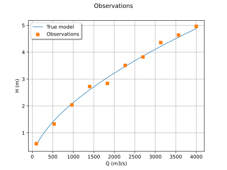
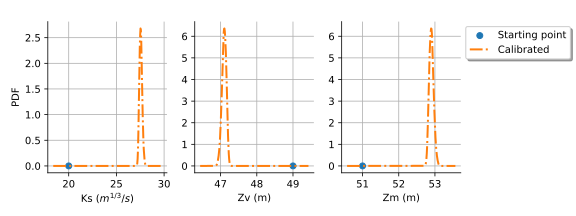

Least squares and Gaussian calibration¶

Calibrate a parametric model: a quick-start guide to calibration
Calibrate a parametric model: a quick-start guide to calibration

Generate flooding model observations
Generate flooding model observations

Generate observations of the Chaboche mechanical model
Generate observations of the Chaboche mechanical model



Calibration of the flooding model
Calibration of the flooding model